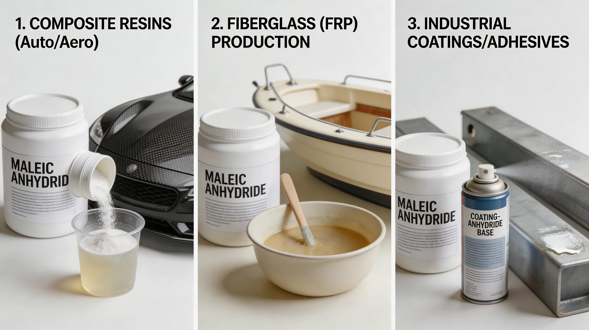
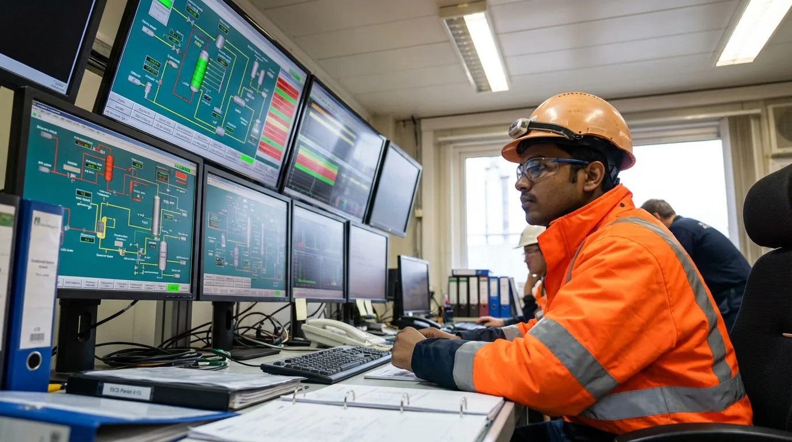

Coproduct
High-purity MA recovered from four dedicated units at IGPL's Taloja campus — integrated with the PA production process.
Overview
Maleic anhydride (MA) is a key reactive intermediate produced as a coproduct during IGPL's phthalic anhydride manufacturing process. The same vapour-phase oxidation of o-xylene that produces PA generates MA as a byproduct — IGPL recovers and purifies this stream through four dedicated MA recovery units at the Taloja campus.
Unlike MA produced as a primary product by dedicated maleic processes (butane oxidation), IGPL's MA is integrated with the PA output stream. This means the economics and supply discipline of IGPL's MA are closely linked to PA production — offering customers a stable, integrated source tied to one of India's largest continuous chemical operations.
MA from IGPL is supplied in solid flake form or as a molten liquid, meeting the purity standards required for UPR, agricultural chemical synthesis, and food-grade fumaric acid conversion.
CAS
108-31-6
Formula
C4H2O3
Mol. Wt.
98.06
Applications

Largest single application. MA reacts with glycols to form UPR for fibreglass composites, pipes, tanks, boats, and automotive panels.
Isomerisation of maleic acid to fumaric acid, used in food additives, beverages, and polymer synthesis.
Hydration to malic acid for food and pharmaceutical applications including flavour enhancement and acidity regulation.
Malathion, maleic hydrazide, and related herbicide and insecticide intermediates in crop protection chemistry.
Copolymers with alkenes for viscosity index improvers and dispersants used in engine oils and industrial lubricants.
Copolymers with styrene, vinyl acetate, and ethylene for specialty coating and adhesive applications.

Production
During the vapour-phase oxidation of o-xylene to phthalic anhydride, the reaction selectivity produces a small fraction of maleic anhydride in the process gas stream. Rather than combusting or venting this stream, IGPL operates four MA recovery units that extract, condense, and purify this material to commercial-grade specification.
This integration has two advantages: it improves the overall carbon utilisation of the PA process (reducing waste), and it provides a secondary revenue stream from the same raw material and energy input. The recovery units at Taloja have been refined over multiple PA plant expansions since the 1990s.
Recovery Process Flow
O-Xylene Oxidation
PA + MA in process gas
MA Recovery Unit
Condensation & separation
MA ≥99.5%
Flakes or molten
Specifications
| Parameter | Specification | Test Method |
|---|---|---|
| Purity (MA content) | ≥ 99.5% | GC |
| Colour (APHA, molten) | ≤ 10 | APHA |
| Acid value | 1,142–1,148 mg KOH/g | Titration |
| Moisture | ≤ 0.1% | Karl Fischer |
| Iron content | ≤ 5 ppm | ICP-OES |
| Appearance | White crystalline flakes | Visual |
| Melting point | 52–54 °C | DSC |
Specifications subject to change. Always request current TDS from the commercial team prior to formulation.
IGPL provides batch-specific Certificates of Analysis (CoA) with every shipment. Maleic anhydride purity and melt colour are tested per batch. For supplier qualification documentation, contact our technical team.
Why IGPL
MA produced and recovered on the same campus as PA. No separate feedstock risk or dedicated plant downtime.
Four dedicated MA recovery units, continuous QC monitoring, APHA colour controlled within customer specs.
Taloja location, 50 km from JNPT, enables export logistics and compressed lead times for both domestic and overseas customers.
IGPL has operated MA recovery since the earliest PA plants. Process optimisation across decades delivers yield and quality discipline.
FAQ
IGPL supplies maleic anhydride as solid white crystalline flakes in bulk bags (500 kg) or drums. Molten delivery by tanker is available for large-volume customers with suitable storage facilities at their plant.
Standard commercial grade is ≥99.5% purity. This meets the requirements of UPR manufacturers, agrochemical intermediates, and food-grade conversion processes (fumaric/malic acid).
IGPL MA meets the purity and trace impurity specifications typically required for fumaric acid synthesis. Customers producing food-grade fumaric acid should request the detailed TDS and confirm against their specific process requirements.
Maleic anhydride should be stored in a cool, dry, well-ventilated area away from sources of heat and moisture. Shelf life for solid flakes is typically 12 months under appropriate conditions. MA is hygroscopic and must be kept sealed.
MA is a coproduct recovered from the PA process. Production volumes are therefore proportional to PA production throughput. Customers should contact the commercial team to discuss volume availability for specific planning periods.
Our commercial team can provide TDS, SDS, pricing, and logistics information for maleic anhydride.